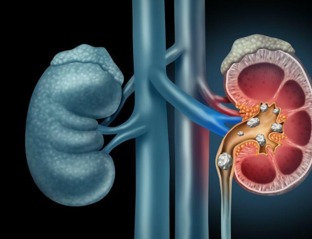

Đau lưng - Đau cổ vai gáy
1. Đau lưng
1.1. Đau lưng và ảnh hưởng của bệnh đến cơ thể
Thoái hóa cột sống bắt nguồn từ nhiều yếu tố: Tuổi cao, giới tính nữ, phải lao động nặng. Một số nguyên nhân khác như: Tiền sử chấn thương cột sống, bất thường trục chi dưới, tiền sử phẫu thuật cột sống, yếu cơ, do di truyền.
Vùng lưng được coi như bản lề của cột sống, nơi chịu tác động bởi mọi tư thế vận động, mang vác, xoay chuyển hay đi lại bình thường. Vì thế vùng lưng cũng thường xuyên bị đau, có thể là cơn đau cấp do chịu lực tác động mạnh, đột ngột hoặc kéo dài. Ngoài ra, đau ở vùng lưng kéo dài còn do những bệnh lý khác gây ra.
Đau lưng cấp có thể gặp phải ở mọi lứa tuổi, phổ biến nhất là độ tuổi từ 30 - 60. Hiện nay đau lưng cấp ngày càng có xu hướng trẻ hóa, rất nhiều bạn trẻ, thậm chí thanh thiếu niên đã thường xuyên gặp phải tình trạng này.
Ngoài ra, bị đau ở lưng có thể là do hội chứng đau xương khu trú thường gặp. Triệu chứng này rất phổ biến (gặp ở 65 - 80% người trưởng thành) song người bệnh chỉ bị theo từng đợt, khoảng một vài lần trong đời. Có 10% bệnh nhân bị hội chứng đau xương khu trú biến chứng thành đau lưng cấp tính.
Nhìn chung đau ở lưng thường không gây nguy hiểm đến tính mạng song ảnh hưởng rất lớn đến sinh hoạt, cuộc sống của người bệnh, khiến họ luôn trong tình trạng mệt mỏi, đau đớn. Có lẽ không ít bạn đọc cảm nhận được ảnh hưởng to lớn của bệnh đến cuộc sống và sinh hoạt như thế nào. Khi cơn đau khởi phát, gần như mọi vận động hàng ngày từ đi lại, làm việc, bê vác, sinh hoạt đều bị hạn chế.
Đau ở vùng lưng khiến người bệnh cảm thấy phiền toái, khó chịu
Cơn đau ở vùng lưng cấp tính diễn ra ít thường xuyên có thể người bệnh không để ý, song với bệnh nhân đau lưng mạn tính thì đây thực sự là vấn đề lớn. Để tránh đau nhức, người bệnh phải di chuyển chậm chạp, cẩn thận, không thể thực hiện nhiều công việc nặng.
Đau ở lưng vào ban đêm thường gây khó ngủ, mất ngủ, lâu dài khiến tinh thần mệt mỏi, trí nhớ kém, mất tập trung. Nó còn gây ảnh hưởng lâu dài đến tinh thần, một số nghiên cứu chỉ ra người bệnh đau lưng mạn tính có nguy cơ trầm cảm cao gấp 4 lần người bình thường, nhất là khi cơn đau diễn ra thường xuyên.
Chứng bệnh đau lưng còn ảnh hưởng không ít đến đời sống tình dục của nhiều cặp vợ chồng. Các tư thế quan hệ tình dục thường tác động lớn đến vùng cột sống này, khiến cơn đau càng nặng nề hơn. Vì thế, khi người vợ hoặc chồng bị đau ở lưng thường có xu hướng né tránh sinh hoạt vợ chồng, giảm sự gắn kết và gần gũi giữa cả hai.
Một điều nguy hiểm đó là hầu hết bệnh nhân bị đau lưng thường chủ quan trong thăm khám và điều trị bệnh. Nhất là khi cơn đau xảy ra theo đợt với tần suất không nhiều. Khi các cơn đau ở lưng xảy ra thường xuyên, khiến cuộc sống bệnh nhân đảo lộn mới đi thăm khám thì rất có thể bệnh đã gây ra biến chứng. Những biến chứng nguy hiểm mà bệnh nhân có thể gặp gồm: yếu liệt các cơ chi dưới, mất khả năng vận động, tê bì hoặc mất cảm giác 2 chân, hệ thần kinh chi dưới bị chèn ép gây rối loạn tiểu tiện,…
Đau vùng lưng có thể gây biến chứng nguy hiểm đến sức khỏe và vận động
Bệnh càng nặng, biến chứng càng phức tạp thì thời gian điều trị càng kéo dài và chi phí cũng cao hơn.
1.2. Những nguyên nhân chính dẫn đến đau lưng
Nguyên nhân gây đau ở lưng có thể do thói quen xấu gây tác động tổn thương cơ xương đốt sống hoặc do bệnh lý. Đa phần các trường hợp đau lưng do bệnh lý nặng hơn, biến chứng phức tạp hơn. Tuy nhiên nếu không sớm thay đổi các thói quen xấu, các đốt sống sẽ dần bị tổn thương, biến dạng ảnh hưởng đến khả năng vận động sau này.
1.2.1. Những nguyên nhân chính dẫn đến đau lưng
Nguyên nhân này chiếm hầu hết các trường hợp người trẻ bị đau ở lưng và tỉ lệ mắc bệnh ngày càng tăng
Ngồi quá nhiều: Người trẻ tuổi thường dành thời gian ngồi quá lâu trước màn hình vi tính, tivi hoặc làm việc văn phòng yêu cầu ngồi lâu một tư thế gây ra những cơn đau vùng lưng dai dẳng. Khi ngồi lâu một tư thế, trọng lượng cơ thể dồn lực vào mông, hông, cột sống phải đảm nhiệm nhiệm vụ chống đỡ nhiều hơn để lưng được thẳng.
Nếu tư thế ngồi không thẳng hoặc ngồi nhiều kéo dài, lưng sẽ bị quá tải và kết quả là những cơn đau nhức vùng cột sống thắt lưng.
Ngủ sai tư thế: Không ít người có thói quen ngủ co quắp, đầu không thẳng với cổ, nằm úp bụng hoặc cuộn tròn. Tư thế ngủ này rất không tốt, nó làm tăng áp lực lên cột sống và gây ra đau lưng cấp tính. Nếu thói quen này kéo dài, nó sẽ gây ra đau mạn tính.
Ngủ sai tư thế có thể gây đau vùng cổ, lưng
Tư thế ngủ tốt nhất cho cột sống thắt lưng là ngủ nằm ngửa, lưng giữ thẳng.
Chấn thương: Tai nạn giao thông, tai nạn lao động, chơi thể thao hoặc yêu cầu công việc phải cúi nhiều, bê vác nặng,… cũng có thể là nguyên nhân gây đau lưng từ cấp tính đến mạn tính.
1.2.2. Do bệnh lý
Những bệnh lý gây triệu chứng đau ở lưng bao gồm:
Thoái hóa cột sống: Bệnh lý này thường gặp ở người cao tuổi, với biểu hiện là cơn đau thắt lưng xuất hiện thường xuyên. Đau đớn khiến người bệnh không đi với dáng bình thường mà có xu hướng còng lưng xuống. Điều này khiến bệnh càng nặng hơn và cơn đau lưng càng xuất hiện thường xuyên hơn.
Loãng xương: Loãng xương có thể biểu hiện bằng những cơn đau dữ dội phần lưng trên hoặc lưng giữa. Ngoài ra, loãng xương cũng khiến người trưởng thành giảm chiều cao từ 2cm trở lên.
Viêm khớp: Khi viêm khớp xảy ra ở bất cứ khớp nào của lưng, nhất là phần thắt lưng thì người bệnh thường xuyên bị đau lưng.
Sỏi thận: Sỏi thận khiến bệnh nhân thường xuyên bị đau vùng thắt lưng với những cơn đau nhói dữ dội. Cơn đau thường khởi phát ở 2 hố thắt lưng, sau đó lan dần xuống bụng và đùi.
Sỏi thận gây đau thắt lưng dữ dội
Thoát vị đĩa đệm: Đây cũng là bệnh lý xương khớp thường gặp, gây đau vùng cột sống thắt lưng dần lan đến mông và chân.
Những người bị đau lưng do bệnh lý cần điều trị bệnh mới có thể cải thiện được tình trạng này. Để cải thiện triệt để tình trạng này, cần chẩn đoán chính xác nguyên nhân bệnh lý dựa trên xét nghiệm, thăm khám, từ đó có phương pháp điều trị thích hợp.
2. Đau cổ vai gáy
Đau cổ vai gáy: Nguyên nhân, triệu chứng, chẩn đoán và điều trị Với bệnh đau cổ vai gáy, ban đầu bệnh nhân có cảm giác đau nhẹ, mỏi vùng vai gáy và hạn chế vận động ở vùng cổ gáy, vùng đầu, tình trạng này thường xuất hiện tự phát hoặc sau khi lao động nặng.
2.1. Tổng quan bệnh đau cổ vai gáy
Đau cổ vai gáy là tình trạng cơ vùng vai gáy co cứng gây đau, kèm theo các hạn chế vận động khi quay cổ hoặc quay đầu. Bệnh thường xuất hiện vào buổi sáng và có liên quan chặt chẽ đến hệ thống cơ xương khớp và mạch máu vùng vai gáy.
2.2. Nguyên nhân bệnh đau cổ vai gáy
Bệnh đau cổ vai gáy khá phổ biến, có thể do nhiều nguyên nhân khác nhau như: thoái hóa, thoát vị đĩa đệm các đốt sống cổ, thiểu năng vành, u đỉnh phổi... Bệnh thường xuất hiện sáng sớm lúc ngủ dậy hoặc sau khi lao động nặng hoặc bị nhiễm lạnh. Bệnh sẽ tăng khi đứng, đi, ngồi lâu hoặc ho, hắt hơi, vận động cột sống cổ, khi thời tiết thay đổi; bệnh sẽ thuyên giảm khi nghỉ ngơi.
2.3. Triệu chứng bệnh đau cổ vai gáy
Bệnh đau cổ vai gáy thường có các triệu chứng mang tính cơ học, đó là:
+ Hiện tượng đau tăng lên khi đứng, đi lại, ngồi lâu, vận động cột sống cổ, các triệu chứng đau sẽ tăng lên khi thay đổi thời tiết.
+ Các triệu chứng đau sẽ lan xuống cả bả vai, làm cho cánh tay, cẳng tay và ngón tay bị tê mỏi rất khó chịu, thậm chí chỉ cần sờ vào cũng có cảm giác như tê cứng bì, đây là biểu hiện tăng cảm giác. Khi bị đau quá mức, chỉ cần đi lại nhẹ nhàng cũng đủ gây ảnh hưởng, gây đau vùng cổ, vai, gáy.
Bệnh đau cổ vai gáy nếu không được điều trị kịp thời sẽ ảnh hưởng nhiều đến sinh hoạt, ăn uống và giấc ngủ của người bệnh
2.4. Đối tượng nguy cơ bệnh Đau cổ vai gáy
Các đối tượng có nguy cơ cao mắc bệnh đau cổ vai gáy như:
+ Những người làm công việc văn phòng, lái xe, lao động nặng thường mắc phải bệnh này.
+ Những đối tượng bị tác động từ bên ngoài, các tác động bệnh lý bên trong cơ thể như những người bị thoái hóa đốt sống cổ, thoát vị đĩa đệm, lao, ung thư vùng cổ cũng là nguyên nhân trực tiếp gây ra đau mỏi vai gáy triền miên cho người bệnh.
+ Những người bị bị dị tật bẩm sinh vùng cổ, gáy, do thay đổi thời tiết.
2.5. Phòng ngừa bệnh đau cổ vai gáy
Để phòng ngừa bệnh đau cổ vai gáy có thể kể đến một số biện pháp sau:
+ Có chế độ tập luyện thể dục thể thao phù hợp, lựa chọn các bài tập vừa sức, phù hợp với sức khỏe của bản thân.
+ Cần có chế độ làm việc hợp lý, nên vận động và nghỉ giải lao khi ngồi lâu.
+ Có tư thế đúng khi ngồi đọc sách, học bài, đánh máy, cổ luôn thẳng, không cúi gập cổ quá lâu.
+ Có chế độ dinh dưỡng phù hợp, cần ăn đủ chất, bổ sung một số khoáng chất thiết yếu cho cơ thể như: như canxi, kali, các vitamin nhóm B, C, E,...
Cần bổ sung chế độ dinh dưỡng phù hợp để phòng ngừa đau cổ vai gáy
2.6. Các biện pháp chẩn đoán bệnh đau cổ vai gáy
Để chẩn đoán bệnh có thể dựa vào các phương pháp sau:
+ Kiểm tra tiền sử bệnh để loại trừ các khả năng bệnh khác
+ Khám lâm sàng.
2.7. Các biện pháp điều trị bệnh Đau cổ vai gáy
Có nhiều cách để điều trị đau cổ vai gáy, tùy thuộc vào mức độ của bệnh để có phương pháp điều trị thích hợp, vậy đau cổ vai gáy phải làm sao?
+ Khi bệnh mới ở giai đoạn đầu cần tránh cố gắng xoay đầu, xoay cổ, không ngồi quạt điện hoặc điều hòa để tránh co cứng cơ và đau dữ dội hơn, khi đi ngủ, chườm ấm vùng cổ, chiếu đèn hồng ngoại hoặc xoa bóp nhẹ nhàng 10-15 phút, sau 2-3 ngày bệnh sẽ tự hết.
+ Khi bệnh ở mức độ vừa, tức là mức độ kích thích dây thần kinh lớn hơn, các biểu hiện bị đau cổ vai gáy bên phải hoặc đau cổ vai gáy bên trái rõ ràng hơn cần phải dùng một số loại thuốc hỗ trợ như: thuốc giảm đau, chống viêm non-steroid như diclofenac, ibuprofen, paracetamol, aspirin hoặc dùng miếng dán salonpas để giảm được triệu chứng vùng này.
+ Ở mức độ bệnh nặng cần sử dụng các biện pháp châm cứu hoặc dùng thuốc ức chế dẫn truyền thần kinh.
+ Bệnh đau cổ vai gáy không phải là bệnh khó chữa, cần điều trị sớm, nếu điều trị sai, điều trị muộn sẽ có nguy cơ cao phải nhập viện.
Với nhiều năm kinh nghiệm trong việc thăm khám và điều trị các bệnh lý cơ xương khớp, hiện nay Phòng khám chuyên khoa Hồng Ngọc đã trở thành một trong các phòng khám uy tín, có khả năng thăm khám, sàng lọc và điều trị nhiều bệnh lý chuyên sâu. Do đó, nếu có triệu chứng của đau cổ vai gáy thì bạn có thể đến Phòng khám chuyên khoa Hồng Ngọc để thăm khám, chẩn đoán và điều trị giúp phục hồi sức khỏe theo phác đồ điều trị cụ thể.
Để được tư vấn trực tiếp, Quý Khách vui lòng bấm số 0345.164.999 ( Hotline Phòng khám)